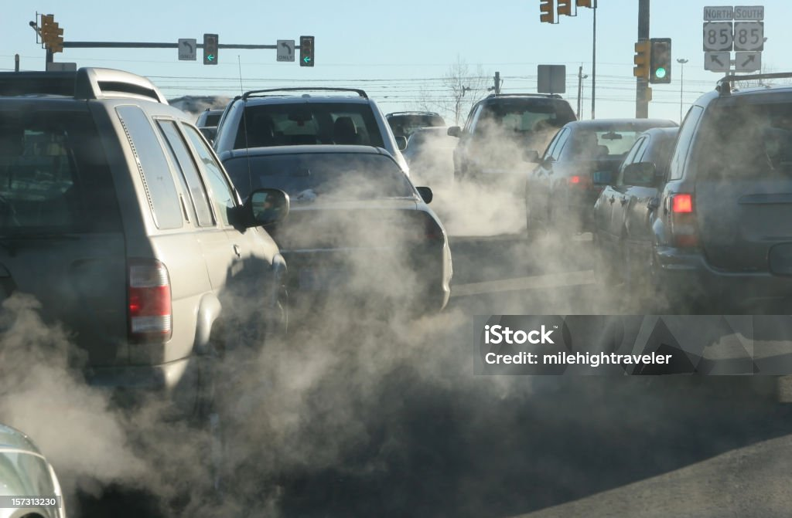

¿De dónde vienen las cosas que compramos?
Coge el móvil que tienes en la mano, la camiseta que llevas puesta o la fruta que has comido hoy. ¿Te has preguntado alguna vez dónde se fabricaron y cómo llegaron hasta ti?
Vivimos en un mundo globalizado. Esto significa que los productos que consumimos raramente se fabrican en el mismo lugar donde los compramos. Una camiseta puede haberse diseñado en España, tejido con algodón de India, cosido en Bangladesh, transportado en un barco que atravesó el canal de Suez, almacenado en un puerto holandés y, finalmente, llevado en camión hasta una tienda de tu barrio .
Este recorrido, desde el origen hasta el destino final, es lo que llamamos flujos comerciales.
¿Qué son los flujos comerciales?
Los flujos comerciales son las rutas que siguen los productos cuando se compran y se venden entre diferentes lugares. Pueden ser:
- Flujos nacionales: dentro de un mismo país (ej. una naranja de Valencia que se vende en Madrid).
- Flujos internacionales: entre diferentes países (ej. un móvil fabricado en China y vendido en España).
Hoy en día, la mayoría de los productos que usamos a diario han viajado miles de kilómetros antes de llegar a nuestras manos. Esto es posible gracias al transporte (barcos, aviones, camiones, trenes) y a las infraestructuras (puertos, carreteras, aeropuertos).
El problema invisible: la huella de carbono
Pero todo este movimiento tiene un coste oculto: el impacto ambiental. Cada vez que un barco quema combustible, un camión recorre una carretera o un avión surca el cielo, se emiten a la atmósfera gases de efecto invernadero, principalmente dióxido de carbono (CO₂) .
La huella de carbono es la cantidad total de gases de efecto invernadero que se emiten como resultado de una actividad. En nuestro caso, es la cantidad de CO₂ que "se escapa" a la atmósfera durante el viaje de un producto.
¿Qué medio de transporte contamina más?
No todos los transportes son igual de contaminantes. Imagina que quieres enviar un paquete de 1 tonelada a 1.000 kilómetros de distancia. El consumo de energía y las emisiones varían muchísimo según el medio:
- Avión: Es el más rápido, pero también el que más contamina por tonelada transportada. Los aviones queman muchísimo combustible en cada vuelo.
- Camión: Es muy útil para distancias cortas y medias (el reparto de última milla), pero también emite una cantidad significativa de CO₂ por cada producto.
- Barco: Es el más eficiente si hablamos de emisiones por tonelada y kilómetro . Un solo barco puede transportar miles de contenedores a la vez. Sin embargo, como el viaje es tan largo, la cantidad total de emisiones absolutas es enorme.
- Tren: Es una alternativa más limpia que el camión para mercancías pesadas en largas distancias, sobre todo si es eléctrico.
Ejemplo para entenderlo: Enviar un móvil por avión desde China a España es mucho más rápido, pero contamina aproximadamente 10 veces más que si se enviara en barco .
¿Cómo podemos calcular la huella de un producto?
Para saber cuánto contamina el viaje de un producto, necesitamos saber tres cosas:
- La distancia recorrida: ¿Cuántos kilómetros ha viajado el producto desde su origen hasta tu ciudad?
- El medio de transporte utilizado: No es lo mismo venir en barco que en avión.
- El "peso" del producto: Cuanto más pesa, más combustible se necesita para moverlo.
En esta tarea vas a investigar justo eso. Vas a seguir el rastro de un producto cotidiano, calcularás los kilómetros que ha viajado y estimarás cuántas emisiones de CO₂ ha generado.
El secreto que hay detrás de cada compra te sorprenderá.
